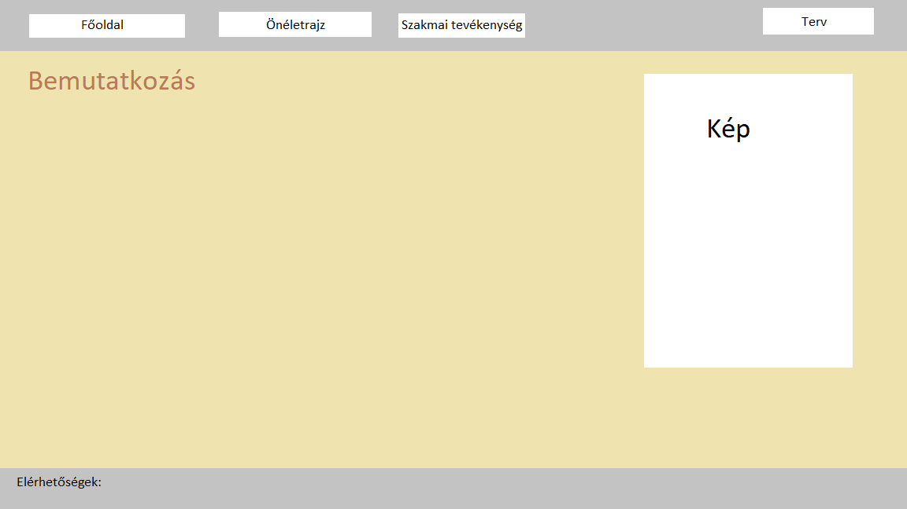
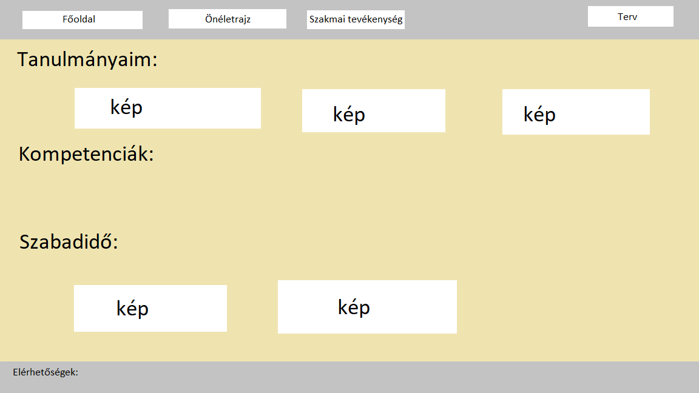
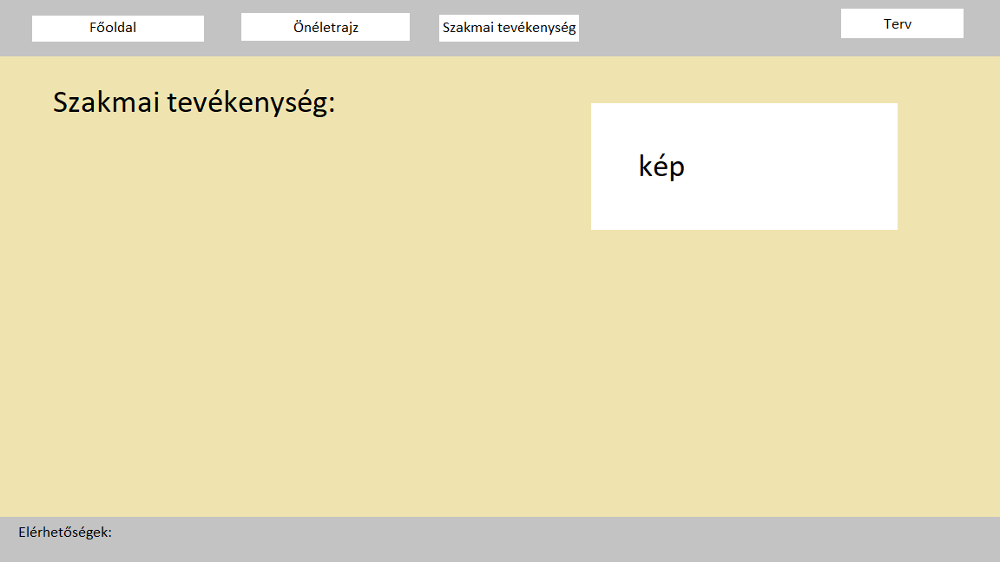
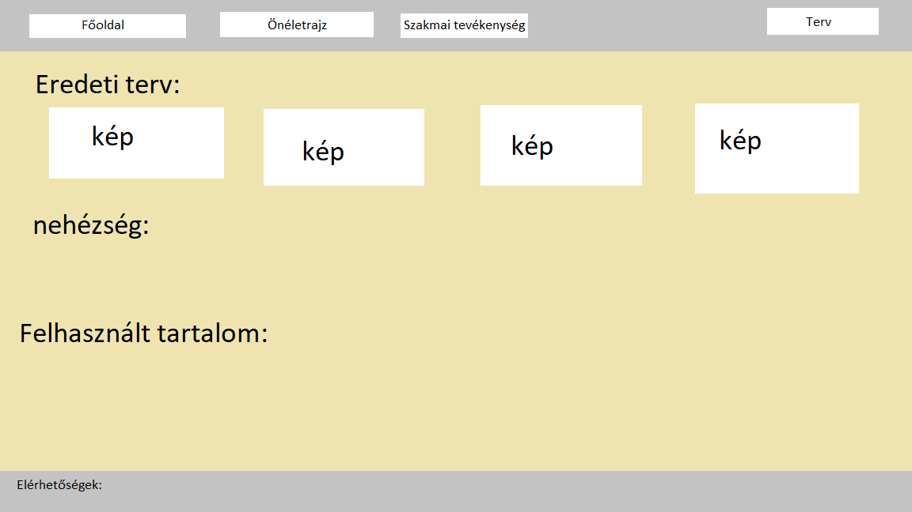

Eredeti terv:
   E terv szerint kezdtem neki a munkának. A színek kicsit változtak, de sikerült megvalósítani amit szerettem volna.
Nehézségek:
- Először programoztam html-ben ezért nehezen indult a munka, de végére már egyszerűbben ment.
- A képek méretezése nehézkes volt, de sikerült jól beállítani őket.